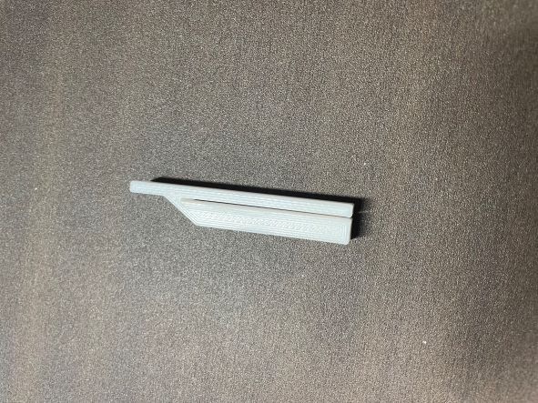
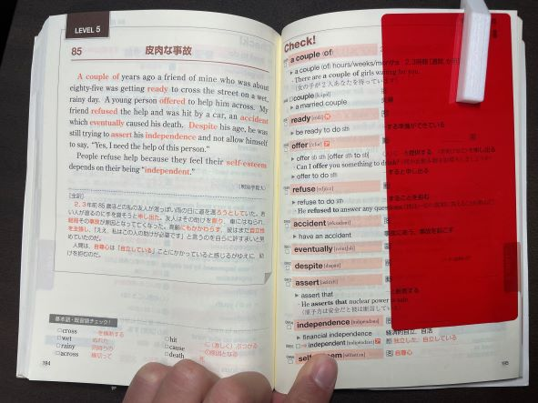

第4回（プロトタイプ）
テーマ
電車の中で勉強する学生
今回班のメンバーで決めたテーマは電車の中で勉強する学生になったので、そのようなときに役に立つものを考えた。
私は、電車の中で赤シートを使って暗記系の勉強をすることが多かったので、そのようなときに使えるものを作りました。
プロトタイプ

これは、使いたい参考書と暗記シートを挟んで、暗記したい箇所を手を使わずに固定するようにしました。
使い方は、このようになります。

このようにすることで電車などの足元が不安定な時や、狭いところでも片手で勉強できると思います。
感想と反省
中々、テーマが決まらずに進みが悪かったが、完成してよかった
反省点は、暗記シートで隠す箇所が不安定な所と赤シートがとれやすいところだったので改善したい。